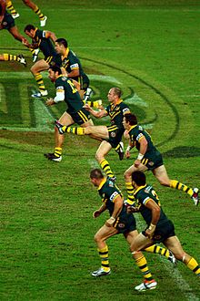
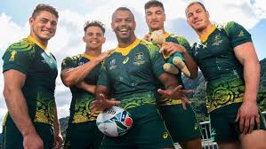

El rugby es un deporte de evasión en equipo nacido en Inglaterra. Fue en ese país donde tomó su nombre a partir de las reglas del fútbol elaboradas en el colegio de la ciudad de Rugby (Rugby School) en el siglo XIX. Sobre la forma de denominar en español al jugador practicante del deporte, el Diccionario panhispánico de dudas informa que «se usa con frecuencia en los países del Río de la Plata la forma rugbier con el sufijo -er propio del inglés para crear este tipo de derivados (aunque en inglés se usa, en este caso, la expresión rugby player). La Real Academia Española utiliza la palabra "rugbi", como "adaptación gráfica" del término inglés y recomienda la expresión rugbista para referirse al jugador, utilizando el  sufijo -ista (como en futbolista, golfista, tenista, etc)». El rugby se practica a nivel internacional en todos los continentes, aunque ha alcanzado un importante grado de desarrollo en las naciones que conforman las islas británicas (Escocia, Gales, Inglaterra, Irlanda e Irlanda del Norte), así como en Australia, Fiyi, Nueva Zelanda, Papúa Nueva Guinea, Samoa, Sudáfrica, Tonga, Uruguay, Argentina y Francia.
Trae Williams tenía una fulgurante carrera de velocista por delante. Un joven que con 22 años había parado el cronómetro en 10,1 segundos, lo que le convertía en el quinto australiano más rápido de la historia. Sin embargo, algo cambió en su cabeza y hace unos días dejó de ser un prometedor velocista para convertirse en un jugador de rugby 7 con mucho potencial. Quadzilla, como le conocen todos por la descomunal musculación de sus piernas, debutó con los 'aussies' en las Series Mundiales de Rugby en Dubái. Williams, como casi todos los australianos, probó el rugby en el colegio y jugó a Rugby League (rugby XIII) en Brisbane, llegando a enrolarse en la Academia del North Queensland en 2014.  Pero lo que le ha empujado a cambiar el atletismo por el rugby ha sido la posibilidad de cumplir su sueño de ser olímpico con un deporte que siempre le ha llamado la atención. Para Tim Walsh, seleccionador australiano, no hay prisa. Quadzilla comenzó a jugar al rugby 7 en mayo, cuando firmó un contrato con Rugby Australia que concluirá en 2021. Eso le asegura participar en el grupo que peleará por estar en los Juegos Olímpicos de Tokio en julio de 2020.
La selección de rugby de Australia representa al país en las competiciones oficiales de rugby union. A este equipo se le apoda los Wallabies (ualabí o Wallabies Qantas por razones publicitarias) y compite anualmente con Argentina, Nueva Zelanda y Sudáfrica en el Rugby Championship, en la que también disputan la copa Bledisloe con Nueva Zelanda, la Mandela Challenge Plate con Sudáfrica y el Trofeo Puma con Argentina. Está controlada por la Australian Rugby Union (ARU). Es una de las mejores y mas competitivas selecciones de rugby del mundo. Los australianos han participado en las nueve copas del mundo de rugby y tiene el tercer lugar histórico al haber ganado la Copa Mundial de Rugby en dos ocasiones, en las ediciones de 1991 contra Inglaterra y 1999 contra Francia, ambas disputadas en Europa (siendo el único en lograr tal logro), de la mano de su mítico capitán John Eales. Australia también perdió en la final después de la prórroga con Inglaterra en la competición de 2003 y la 2015 frente a Nueva Zelanda.
Rugby es el nombre de un deporte que enfrenta a dos equipos formados por quince jugadores cada uno. El objetivo es llevar una pelota (balón) ovalada hasta detrás de la línea que supone el final del campo, o hacer pasar esta pelota entre dos postes y un travesaño que se ubican en la misma línea.La denominación de este deporte está vinculada a la ciudad inglesa donde se inventó: Rugby, localidad que pertenece al condado de Warwickshire. El clérigo William Webb Ellis (1806-1872) fue quien, de manera espontánea, habría ideado el rugby en el medio de un partido de fútbol que se disputó en 1823 en la mencionada ciudad.Hoy el rugby es un deporte muy popular en Gran Bretaña, Francia, Argentina, Oceanía y varias naciones africanas. El International Rugby Board (IRB), una entidad fundada en 1886, se encarga de dirigir las diferentes federaciones nacionales de rugby y de organizar el Mundial de esta disciplina.
Australia's women have topped their Cape Town Sevens pool after another undefeated day in South Africa, setting up a likely quarter-final clash with Fiji.The Aussies edged past the USA in their final game of the day, ensuring they progress into the final eight as the best team from Pool C.Australia's men have had another horror Cape Town weekend, in a tournament where they have struggled in recent years, losing their opening game against Kenya. The men will take on bogey side Samoa in their final pool match at 2:09am AEDT.